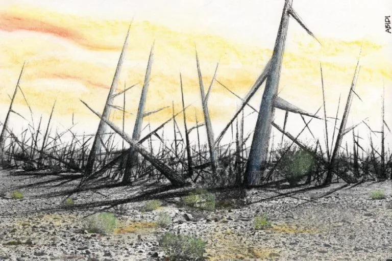
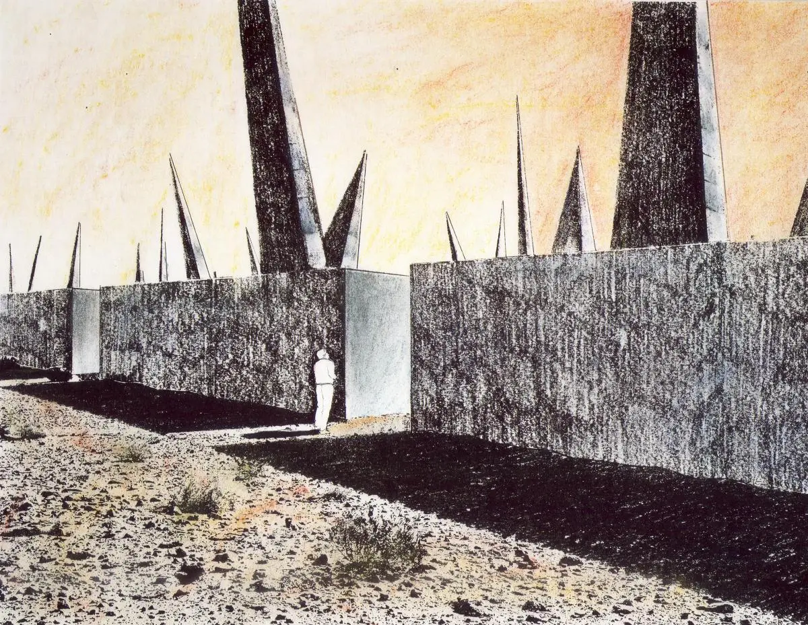
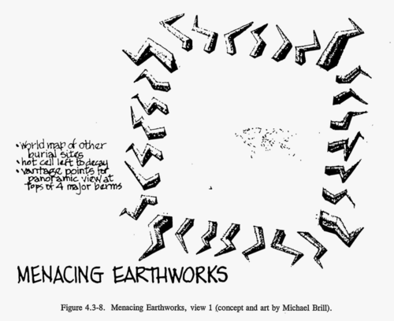
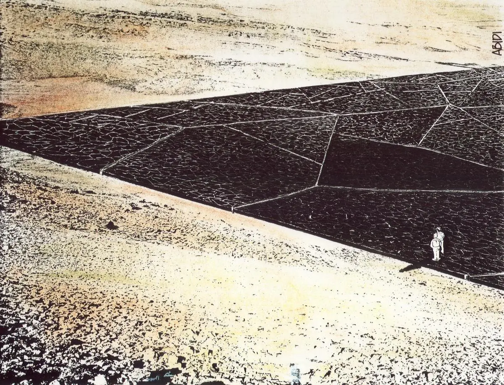
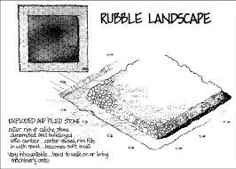
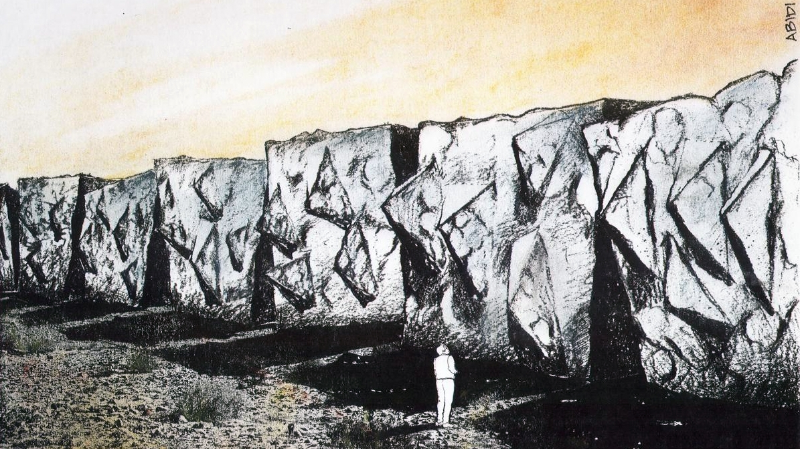

Solutions
When it comes to a matter as complicated as keeping humans away from waste for ten millennia, there is not one solution, nor are any of them perfect. Nevertheless, some general consensus can be reached.
Language
While language will undoubtedly undergo change in the future, there might be a way to keep up with its development. Therefore, Vilmos Voigt proposed to install warning signs in the most used languages in rings around storage locations. With the passage of time, new signs would be added translating the earlier signs, creating an expanding web of sorts with the latest warning messages being the furthest away from the site.
Symbols
The meaning we assign to symbols is by no means static and the field of semiotics even researches what goes into our view of symbols. For instance, the radioactive and biohazard symbols are only useful because of the assocations that have been put on them, and might not carry any intrinsic message to future humans. Therefore, most of the solutions use not only symbols but also universally recognizable designs, such as human portraits conveying certain emotions such as fear or disgust.
Physical markers
A 1993 report from Sandia National Laboratories explored physical designs that would convey concepts of danger through shapes and patterns that evoked bodily harm, destruction and poison. These concepts certainly stir the imagination. They include:
- Landscape of Thorns
- 
- Spike Field
-
- Spikes Bursting Through Grid
- 
- Menacing Earthworks
- 
- Black Hole
- 
- Rubble Landscape
- 
- Forbidding Blocks
- 
-
All illustrations by Michael Brill and Safdar Abidi courtesy of Sandia National Laboratories

These ideas are without a doubt fascinating. Yet it's important to consider that perhaps these designs may raise curiosity more so than fear.
Conclusion
How can we keep humans away from nuclear waste in the far future? There is certainly no shortage of ideas. Some think the best method is to scare anyone off. Others say hiding it from them is the best method. In the grand scheme of things, nuclear waste and handling it is still all very new ground for humans. The Waste Isolation Power Plant has until 2035 to decide which design it will pick for its storage sites. It looks like for the near future, it's still anyone's game.